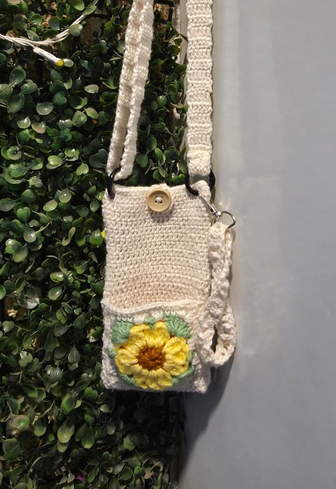

Sunflower Phone Sling
A compact phone sling designed for everyday use, featuring an adjustable and detachable strap so you can style it however you like. The front pocket holds a tiny sunflower granny pouch that's perfect for carrying small essentials like earbuds, lip balm, coins, keys, or even a tiny sanitizer.
When you're working multiple rounds with the exact same stitch count, it's surprisingly easy to lose track. Stitch markers are your best friend here! Mark the beginning of every round and count your stitches every few rounds to make sure your rectangle stays perfectly even. A small counting mistake early on becomes much more noticeable once the bag is assembled.
Follow these tutorials
Video walkthroughs I used while making this bag.
Tools & Materials
List of exact yarn, hooks, and accessories used for this bag.
This page contains Amazon affiliate links. As an Amazon Associate I earn from qualifying purchases — at no extra cost to you. Thank you for supporting Loopsoy!